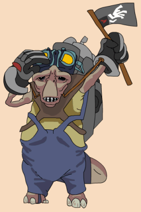

| Classification | Kulless |
| Gender | Male |
| Height | unknown |
| Home World | Gerres Gule |
| Podracer | Kulless Squall |
Shrivel Braittrand was Boles Roor's chief mechanic. Sometime after the Boonta, Boles Roor left podracing for a while in order to become a full time Glimmik singer, so Braittrand took over on the podracing circuit. Braittrand built his pod from scratch.